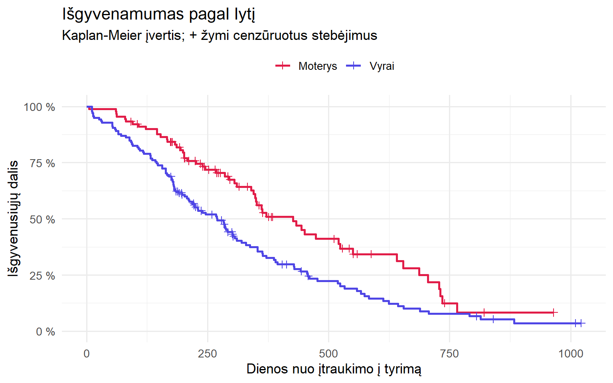

duom <- survival::lung
duom$ivykis <- as.integer(duom$status == 2) # 1 = mirtis, 0 = cenzūruota
duom$lytis <- factor(duom$sex, levels = 1:2, labels = c("Vyrai", "Moterys"))
table(duom$ivykis)
0 1
63 165 Paulius Alaburda
2026 m. spalio 25 d.
Išgyvenamumo analizė atsako į klausimą „kiek laiko praeina iki įvykio?“. Pavadinimas kilęs iš medicinos, kur įvykis dažniausiai yra mirtis ar ligos atkrytis, bet tie patys metodai tinka bet kuriam laikui iki įvykio:
Šiame įraše pereisime visą kelią su R: nuo duomenų paruošimo iki Kaplan-Meier kreivių, log-rank testo ir Cox regresijos.
Dėl cenzūravimo. Kai tyrimas baigiasi, dalis tiriamųjų įvykio dar nepatyrė: pacientas gyvas, klientas vis dar moka prenumeratą. Apie juos žinome tik tiek, kad jų laikas iki įvykio yra ilgesnis nei stebėjimo trukmė.
Abu „paprasti” sprendimai iškreipia rezultatą:
Išgyvenamumo analizės metodai naudoja visą turimą informaciją: cenzūruotas stebėjimas skaičiuojamas „rizikos grupėje” tol, kol jį matome, o po to iš jos tvarkingai pašalinamas.
Naudosime klasikinį lung duomenų rinkinį iš survival paketo: 228 pažengusio plaučių vėžio pacientai, stebėti JAV North Central Cancer Treatment Group tyrime. Mus domins:
time: stebėjimo trukmė dienomis;status: 1, jei stebėjimas cenzūruotas, 2, jei pacientas mirė;sex: 1 vyras, 2 moteris;age: amžius metais;ph.ecog: gydytojo įvertinta funkcinė būklė pagal ECOG skalę (0 = be simptomų, 3 = didžiąją dienos dalį lovoje).duom <- survival::lung
duom$ivykis <- as.integer(duom$status == 2) # 1 = mirtis, 0 = cenzūruota
duom$lytis <- factor(duom$sex, levels = 1:2, labels = c("Vyrai", "Moterys"))
table(duom$ivykis)
0 1
63 165 Iš 228 pacientų 165 mirė stebėjimo metu, o 63 stebėjimai cenzūruoti.
survival paketas priima ir 1/2 kodavimą, bet aiškus 0/1 (1 = įvykis įvyko) apsaugo nuo klaidų, ypač jei tuos pačius duomenis vėliau analizuosite kita programa.
Pagrindinis išgyvenamumo analizės objektas yra Surv(). Pliusas po skaičiumi žymi cenzūruotą stebėjimą:
Kaplan-Meier metodas įvertina išgyvenamumo funkciją, t. y. tikimybę, kad įvykis neįvyks iki tam tikro laiko momento. Kiekvieną kartą, kai kas nors patiria įvykį, tikimybė sumažėja proporcingai tam, kiek žmonių tuo metu buvo rizikos grupėje.
Call: survfit(formula = Surv(time, ivykis) ~ 1, data = duom)
n events median 0.95LCL 0.95UCL
[1,] 228 165 310 285 363Išgyvenamumo mediana yra 310 d. (95 % PI 285–363): tiek laiko praėjus gyvi išlieka pusė pacientų. Mediana čia geresnė už vidurkį, nes ilgiausiai stebėtų pacientų tikrasis laikas nežinomas.
Tikimybę išgyventi iki konkretaus momento gauname su summary(..., times = ):
Call: survfit(formula = Surv(time, ivykis) ~ 1, data = duom)
time n.risk n.event survival std.err lower 95% CI upper 95% CI
180 160 63 0.722 0.0298 0.6655 0.783
365 65 58 0.409 0.0358 0.3447 0.486
730 13 38 0.116 0.0283 0.0716 0.187Metus išgyvena apie 41 % pacientų (95 % PI 34–49 %).
Ar išgyvenamumas skiriasi tarp vyrų ir moterų? Pirmiausia nubraižykime Kaplan-Meier kreives:
km_lytis <- survfit(Surv(time, ivykis) ~ lytis, data = duom)
kreives <- tidy(km_lytis)
kreives$lytis <- sub("lytis=", "", kreives$strata)
# Kreivė prasideda nuo 1 laiko momentu 0
kreives <- rbind(
data.frame(time = 0, estimate = 1, n.censor = 0, lytis = c("Vyrai", "Moterys")),
kreives[, c("time", "estimate", "n.censor", "lytis")]
)
ggplot(kreives, aes(time, estimate, color = lytis)) +
geom_step(linewidth = 1) +
geom_point(data = subset(kreives, n.censor > 0), shape = 3, size = 2) +
scale_y_continuous(labels = function(x) paste0(x * 100, " %"), limits = c(0, 1)) +
scale_color_manual(values = c(Vyrai = "#4F46E5", Moterys = "#E11D48")) +
labs(
title = "Išgyvenamumas pagal lytį",
subtitle = "Kaplan-Meier įvertis; + žymi cenzūruotus stebėjimus",
x = "Dienos nuo įtraukimo į tyrimą", y = "Išgyvenusiųjų dalis", color = NULL
) +
theme_minimal(base_size = 13) +
theme(legend.position = "top")
Po grafiku verta pateikti ir rizikos grupių dydžius: kiek pacientų dar buvo stebima tam tikru momentu. Dešinė kreivių dalis remiasi vis mažesniu žmonių skaičiumi, todėl ji kur kas mažiau patikima:
rizika <- summary(km_lytis, times = c(0, 250, 500, 750, 1000), extend = TRUE)
data.frame(dienos = rizika$time, grupe = rizika$strata, rizikos_grupeje = rizika$n.risk) dienos grupe rizikos_grupeje
1 0 lytis=Vyrai 138
2 250 lytis=Vyrai 62
3 500 lytis=Vyrai 20
4 750 lytis=Vyrai 7
5 1000 lytis=Vyrai 2
6 0 lytis=Moterys 90
7 250 lytis=Moterys 53
8 500 lytis=Moterys 21
9 750 lytis=Moterys 3
10 1000 lytis=Moterys 0Ar kreivės skiriasi statistiškai reikšmingai? Standartinis atsakymas yra log-rank testas. Jis kiekvienu įvykio momentu lygina stebėtą įvykių skaičių grupėse su skaičiumi, kurio tikėtumėmės, jei grupių rizika būtų vienoda:
Call:
survdiff(formula = Surv(time, ivykis) ~ lytis, data = duom)
N Observed Expected (O-E)^2/E (O-E)^2/V
lytis=Vyrai 138 112 91.6 4.55 10.3
lytis=Moterys 90 53 73.4 5.68 10.3
Chisq= 10.3 on 1 degrees of freedom, p= 0.001 Moterų išgyvenamumas statistiškai reikšmingai geresnis (χ² = 10,3, p = 0,001). Tačiau log-rank testas pasako tik tiek, ar grupės skiriasi. Kiek jos skiriasi, ir atsižvelgiant į kitus veiksnius, parodys Cox regresija.
Cox proporcingų rizikų modelis yra išgyvenamumo analizės „darbinis arklys”. Jis įvertina, kaip kintamieji susiję su rizika (angl. hazard), t. y. įvykio dažniu bet kuriuo laiko momentu tarp tų, kurie dar jo nepatyrė. Rezultatas yra rizikų santykis (angl. hazard ratio, HR):
cox <- coxph(Surv(time, ivykis) ~ lytis + age + ph.ecog, data = duom)
tidy(cox, exponentiate = TRUE, conf.int = TRUE)[, c("term", "estimate", "conf.low", "conf.high", "p.value")]# A tibble: 3 × 5
term estimate conf.low conf.high p.value
<chr> <dbl> <dbl> <dbl> <dbl>
1 lytisMoterys 0.575 0.414 0.799 0.000986
2 age 1.01 0.993 1.03 0.232
3 ph.ecog 1.59 1.27 1.99 0.0000445Kaip skaityti šiuos skaičius:
HR = 0,6 nereiškia, kad moterų „tikimybė mirti yra 40 % mažesnė”. Tai reiškia, kad bet kuriuo laiko momentu tarp dar gyvų pacienčių įvykių dažnis yra 0,6 karto mažesnis nei tarp vyrų. Praktiškai tai virsta ilgesniu išgyvenamumu, bet ne fiksuotu tikimybių skirtumu.
Cox modelis daro prielaidą, kad rizikų santykis laikui bėgant nekinta: jei šiandien moterų rizika 0,6 karto mažesnė, tokia ji ir po metų. Tai patikrinama Schoenfeldo liekanomis:
chisq df p
lytis 2.305 1 0.13
age 0.188 1 0.66
ph.ecog 2.054 1 0.15
GLOBAL 4.464 3 0.22Maža p reikšmė (tarkime, < 0,05) rodytų, kad kintamojo poveikis laikui bėgant kinta. Šiuo atveju prielaida tenkinama nė vienam kintamajam.
Jei prielaida pažeista, galimi sprendimai yra stratifikuoti modelį pagal tą kintamąjį (strata()), įtraukti sąveiką su laiku arba rinktis kitą modelį, pavyzdžiui, parametrinį ar ribotą vidutinį išgyvenamumo laiką (RMST).
Išgyvenamumo mediana buvo 310 d. (95 % PI 285–363). Moterų išgyvenamumas buvo ilgesnis nei vyrų (log-rank p = 0,001; 1 pav.). Daugiamatėje Cox regresijoje moteriškoji lytis buvo susijusi su mažesne mirties rizika (HR = 0,58; 95 % PI 0,41–0,80; p < 0,001), o kiekvienas blogesnės funkcinės būklės ECOG balas su didesne (HR = 1,59; 95 % PI 1,27–1,99; p < 0,001). Proporcingų rizikų prielaida tikrinta Schoenfeldo liekanomis ir nebuvo pažeista.
Ataskaitoje turėtų būti:
Tie patys metodai tinka klientų nutekėjimui analizuoti. „Įvykis” čia yra prenumeratos atsisakymas, o cenzūruoti stebėjimai yra vis dar aktyvūs klientai. Kaplan-Meier kreivė parodo, kiek klientų lieka po 1, 3 ar 12 mėnesių, o Cox regresija leidžia palyginti, pavyzdžiui, kanalus ar planus, atsižvelgiant į kitus veiksnius. Tai patikimiau nei skaičiuoti „vidutinę kliento gyvavimo trukmę” iš vien jau išėjusių klientų.
| Klausimas | Metodas | R funkcija |
|---|---|---|
| Kokia tikimybė išvengti įvykio iki laiko t? | Kaplan-Meier | survfit() |
| Ar grupių išgyvenamumas skiriasi? | Log-rank testas | survdiff() |
| Kiek kintamasis keičia riziką, atsižvelgiant į kitus? | Cox regresija | coxph() |
| Ar rizikų santykis pastovus laike? | Schoenfeldo liekanos | cox.zph() |
Jei turite laiko iki įvykio duomenų, klinikinių ar verslo, ir norite įsitikinti, kad analizė atlikta teisingai, susisiekite. Padėsiu pasirinkti modelį, patikrinti prielaidas ir aiškiai pateikti rezultatus.